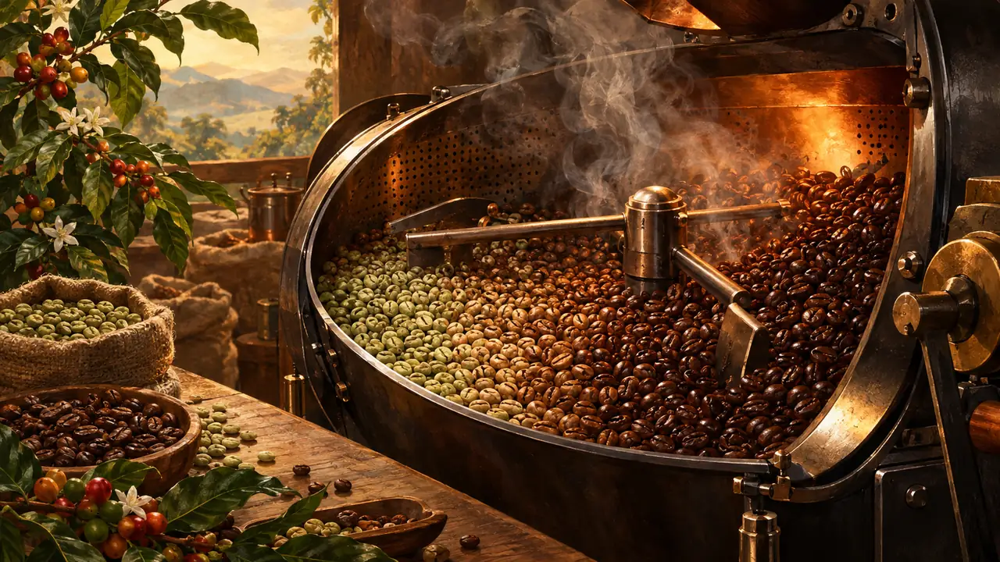

Torréfaction
La torréfaction transforme un grain vert en café aromatique. Elle suit des étapes thermiques repérables, dont les craquements.
L’essentiel en trois points
- Selon le Coffee Research Institute, qui cite l’ouvrage de Davids : premier crack vers 205 °C, volume doublé, perte d’environ 5 % de masse. Ce sont des repères indicatifs, pas des constantes [1].
- Même source : de 205 à environ 220 °C, couleur brun moyen et perte d’environ 13 % [1].
- Le second crack suit une courte phase endothermique [1].
Approfondir
Touchez un titre pour ouvrir ou fermer la rubrique.
Premier crack
Selon le Coffee Research Institute, autour de 205 °C (400 °F), le grain double de volume, devient brun clair et perd environ 5 % de sa masse [1].
Au-delà du premier crack
De 205 °C à environ 220 °C, la couleur passe du brun clair au brun moyen et la perte de masse atteint environ 13 % ; une courte phase endothermique précède le second crack [1]. La même page recommande, comme avis de ses auteurs, de ne pas torréfier bien au-delà du début du second crack ; c’est une préférence de goût, pas une règle [1]. Les températures varient avec la machine, la charge et le capteur.
Chimie : Maillard et caramélisation
La réaction de Maillard progresse rapidement entre environ 140 et 165 °C, dans une plage plus large en pratique dans la matrice du grain [2].
Repos et dégazage
La torréfaction forme des gaz, dont une grande part de dioxyde de carbone ; une partie est libérée pendant la torréfaction, une partie reste piégée dans la structure poreuse du grain [3]. Une étude de torréfacteur sur 21 cafés indique qu’un repos de 24 heures peut ne pas suffire pour atteindre la qualité maximale ; elle ne vaut que pour ses conditions d’essai [4].
Image : illustration générée pour le site, à valeur éditoriale, pas un document photographique.
Termes du dictionnaire
Références
Les affirmations renvoient aux références numérotées ci-dessous, avec leur date de consultation. Les rubriques marquées « à documenter » n’ont pas encore de source vérifiée et n’affirment rien. Certaines sources sont secondaires : leur nature est indiquée dans leur intitulé.
- Coffee Research : torréfaction (Coffee Research Institute) · consulté le 20 novembre 2026
- Coffeester, chimie de la torréfaction (Maillard, caramélisation) · consulté le 20 novembre 2026
- Journal of Agricultural and Food Chemistry 66(21), « Time-resolved gravimetric method to assess degassing of roasted coffee » · consulté le 20 novembre 2026
- Café Kreyol, étude de repos post-torréfaction sur 21 cafés (étude de torréfacteur) · consulté le 20 novembre 2026